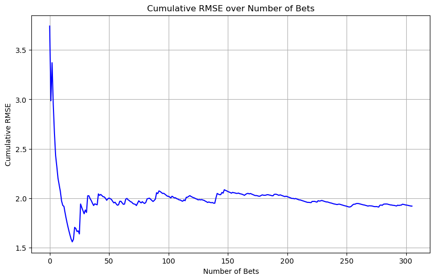

import os
import pandas as pd
import numpy as npPaper: - Berrar rating - Leave one out links
pd.options.display.max_columns = None
pd.options.display.max_rows = Nonedef calculate_rolling_averages(df, n):
# Calculate rolling average goals scored and conceded
df['avg_goals_scored'] = df.groupby('team')['goals_scored'].rolling(window=n, min_periods=n).mean().round(2).reset_index(0, drop=True)
df['avg_goals_conceded'] = df.groupby('team')['goals_conceded'].rolling(window=n, min_periods=n).mean().round(2).reset_index(0, drop=True)
return dfdef calculate_team_ranking(df, N, n):
df['points'] = np.where(df['goals_scored'] > df['goals_conceded'], 3,
np.where(df['goals_scored'] == df['goals_conceded'], 1, 0))
df['rolling_points'] = df.groupby('team')['points'].transform(lambda x: x.rolling(window=n, min_periods=n).sum())
df['rank'] = df.groupby('date')['rolling_points'].rank(ascending=False, method='min')
df['normalized_rank'] = (N - df['rank']) / (N - 1)
return dfimport pandas as pd
# Define a function to download and process the CSV files for a given league and seasons
def download_and_merge_data(league_code, start_season, end_season, columns_needed):
base_url = "https://www.football-data.co.uk/mmz4281/"
merged_df = pd.DataFrame()
# Iterate over the seasons from start_season to end_season
for season in range(start_season, end_season + 1):
# Construct the season string (e.g., '0001' for 2000/2001)
season_str = f"{str(season).zfill(2)}{str(season+1).zfill(2)}"
csv_url = f"{base_url}{season_str}/{league_code}.csv"
# Try to read the CSV file, handling encoding and tokenization errors
try:
# Use 'ISO-8859-1' encoding to avoid the UTF-8 decoding issue
df = pd.read_csv(csv_url, encoding='ISO-8859-1', on_bad_lines='skip', dtype=str)
# Select only the desired columns if they exist in the CSV
df_selected = df[columns_needed].copy() # Safely select the required columns
df_selected["Date"] = pd.to_datetime(df_selected["Date"], dayfirst=True, errors='coerce')
df_selected['SeasonYear'] = df_selected.loc[0, "Date"].year
# Append to the merged DataFrame
merged_df = pd.concat([merged_df, df_selected], ignore_index=True)
except Exception as e:
print(f"Error downloading or processing {csv_url}: {e}")
# Sort the DataFrame by the 'Date' column
merged_df = merged_df.sort_values(by='Date').reset_index(drop=True)
return merged_df# Define league code, start season, and end season (inclusive)
league_code = "D1" # Premier League
start_season = 0 # 2000/2001 season
end_season = 23 # 2023/2024 season
# Download and merge the data
columns_needed = ['Div', 'Date', 'HomeTeam', 'AwayTeam', 'FTHG', 'FTAG']
all_columns_needed = ['Div', 'Date', 'HomeTeam', 'AwayTeam', 'FTHG', 'FTAG',
'HS', 'AS', 'HC', 'AC', 'HF',
'AF', 'HY', 'AY', 'HR', 'AR']
final_df = download_and_merge_data(league_code, start_season, end_season, all_columns_needed)Error downloading or processing https://www.football-data.co.uk/mmz4281/0203/D1.csv: "['HS', 'AS', 'HC', 'AC', 'HF', 'AF', 'HY', 'AY', 'HR', 'AR'] not in index"final_df.groupby('SeasonYear').size()SeasonYear
2000 306
2001 306
2003 194
2004 306
2005 306
2006 306
2007 306
2008 306
2009 306
2010 306
2011 306
2012 306
2013 306
2014 306
2015 306
2016 306
2017 306
2018 306
2019 306
2020 306
2021 306
2022 306
2023 306
dtype: int64final_df.dtypesDiv object
Date datetime64[ns]
HomeTeam object
AwayTeam object
FTHG object
FTAG object
HS object
AS object
HC object
AC object
HF object
AF object
HY object
AY object
HR object
AR object
SeasonYear int64
dtype: objectfinal_df.head()| Div | Date | HomeTeam | AwayTeam | FTHG | FTAG | HS | AS | HC | AC | HF | AF | HY | AY | HR | AR | SeasonYear | |
|---|---|---|---|---|---|---|---|---|---|---|---|---|---|---|---|---|---|
| 0 | D1 | 2000-08-11 | Dortmund | Hansa Rostock | 1 | 0 | 17 | 5 | 7 | 3 | 25 | 19 | 1 | 5 | 0 | 0 | 2000 |
| 1 | D1 | 2000-08-12 | Bayern Munich | Hertha | 4 | 1 | 14 | 11 | 4 | 9 | 13 | 12 | 1 | 0 | 0 | 0 | 2000 |
| 2 | D1 | 2000-08-12 | Freiburg | Stuttgart | 4 | 0 | 15 | 18 | 4 | 7 | 22 | 17 | 1 | 1 | 0 | 0 | 2000 |
| 3 | D1 | 2000-08-12 | Hamburg | Munich 1860 | 2 | 2 | 18 | 9 | 5 | 3 | 0 | 0 | 2 | 2 | 0 | 1 | 2000 |
| 4 | D1 | 2000-08-12 | Kaiserslautern | Bochum | 0 | 1 | 11 | 5 | 5 | 5 | 9 | 8 | 1 | 0 | 0 | 0 | 2000 |
final_df.rename(columns={
'HomeTeam': 'home_team',
'AwayTeam': 'away_team',
'Date': 'date',
'Div': 'league',
'FTHG': 'home_goal',
'FTAG': 'away_goal',
'SeasonYear': 'season2league',
'HS': 'home_shot',
'AS': 'away_shot',
'HC': 'home_corner',
'AC': 'away_corner',
'HF': 'home_fouls',
'AF': 'away_fouls',
'HY': 'home_yellow',
'AY': 'away_yellow',
'HR': 'home_red',
'AR': 'away_red'
}, inplace=True)final_df[final_df["season2league"] == 2000].tail()| league | date | home_team | away_team | home_goal | away_goal | home_shot | away_shot | home_corner | away_corner | home_fouls | away_fouls | home_yellow | away_yellow | home_red | away_red | season2league | |
|---|---|---|---|---|---|---|---|---|---|---|---|---|---|---|---|---|---|
| 301 | D1 | 2001-05-19 | Hamburg | Bayern Munich | 1 | 1 | 13 | 13 | 5 | 7 | 21 | 12 | 4 | 2 | 0 | 0 | 2000 |
| 302 | D1 | 2001-05-19 | Kaiserslautern | Hertha | 0 | 1 | 6 | 10 | 6 | 3 | 9 | 16 | 3 | 3 | 0 | 0 | 2000 |
| 303 | D1 | 2001-05-19 | Leverkusen | Bochum | 1 | 0 | 9 | 7 | 6 | 4 | 10 | 11 | 2 | 1 | 0 | 1 | 2000 |
| 304 | D1 | 2001-05-19 | Schalke 04 | Unterhaching | 5 | 3 | 10 | 3 | 6 | 3 | 4 | 13 | 2 | 3 | 0 | 0 | 2000 |
| 305 | D1 | 2001-05-19 | Werder Bremen | Hansa Rostock | 3 | 0 | 15 | 15 | 6 | 6 | 19 | 9 | 1 | 6 | 1 | 1 | 2000 |
final_df.dropna(inplace=True)final_df['home_team'] = final_df['home_team'].astype('string') # Set home_team as string
final_df['away_team'] = final_df['away_team'].astype('string') # Set away_team as string
final_df['date'] = pd.to_datetime(final_df['date']) # Convert to datetime format
final_df['home_goal'] = final_df['home_goal'].astype('int64') # Set home_goal as int64
final_df['away_goal'] = final_df['away_goal'].astype('int64') # Sfeatures_to_convert = [
'home_shot', 'away_shot', 'home_corner', 'away_corner',
'home_fouls', 'away_fouls', 'home_yellow', 'away_yellow',
'home_red', 'away_red'
]
# Convert the selected features to integer
final_df[features_to_convert] = final_df[features_to_convert].astype(int)# Sort the DataFrame by date to ensure the chronological order of matches
final_df = final_df.sort_values(by='date')final_df.shape(6926, 17)# Create a DataFrame for all matches (home and away combined)
home_df = final_df[['date', 'home_team', 'home_goal', 'away_goal',
'home_shot', 'away_shot', 'home_corner', 'away_corner',
'home_fouls', 'away_fouls', 'home_yellow', 'away_yellow',
'home_red', 'away_red',
'season2league']].copy()
home_df.columns = ['date', 'team', 'goals_scored', 'goals_conceded',
'shot_scored', 'shot_conceded', 'corner_scored', 'corner_conceded',
'fouls_committed', 'fouls_suffered', 'yellow_committed', 'yellow_suffered',
'red_committed', 'red_suffered',
'season2league']away_df = final_df[['date', 'away_team', 'away_goal', 'home_goal',
'away_shot', 'home_shot', 'away_corner', 'home_corner',
'away_fouls', 'home_fouls', 'away_yellow', 'home_yellow',
'away_red', 'home_red',
'season2league']].copy()
away_df.columns = ['date', 'team', 'goals_scored', 'goals_conceded',
'shot_scored', 'shot_conceded', 'corner_scored', 'corner_conceded',
'fouls_committed', 'fouls_suffered', 'yellow_committed', 'yellow_suffered',
'red_committed', 'red_suffered',
'season2league']# Combine home and away data into a single DataFrame
combined_df = pd.concat([home_df, away_df]).sort_values(by=['team', 'date'])df_filtered = final_df[final_df['season2league'] <= 2021]
df_test_2022 = final_df[(final_df['season2league'] >= 2022) & (final_df['season2league'] < 2023)]df_test_2022.shape(306, 17)Pearson’s correlation on 2000/2023 dataset
from scipy.stats import pearsonrdef calculate_additional_rolling_averages(df, columns_list, n):
for column_name in columns_list:
rolling_avg_col_name = f'avg_{column_name}' # Create a new column name for each rolling average
df[rolling_avg_col_name] = df.groupby('team')[column_name].rolling(window=n, min_periods=n).mean().round(2).reset_index(0, drop=True)
return dfdef shift_columns(df, columns_list, group_by_col='team', shift_value=1):
for column_name in columns_list:
df[column_name] = df.groupby(group_by_col)[column_name].shift(shift_value)
return dfdf_filtered.head()| league | date | home_team | away_team | home_goal | away_goal | home_shot | away_shot | home_corner | away_corner | home_fouls | away_fouls | home_yellow | away_yellow | home_red | away_red | season2league | |
|---|---|---|---|---|---|---|---|---|---|---|---|---|---|---|---|---|---|
| 0 | D1 | 2000-08-11 | Dortmund | Hansa Rostock | 1 | 0 | 17 | 5 | 7 | 3 | 25 | 19 | 1 | 5 | 0 | 0 | 2000 |
| 1 | D1 | 2000-08-12 | Bayern Munich | Hertha | 4 | 1 | 14 | 11 | 4 | 9 | 13 | 12 | 1 | 0 | 0 | 0 | 2000 |
| 2 | D1 | 2000-08-12 | Freiburg | Stuttgart | 4 | 0 | 15 | 18 | 4 | 7 | 22 | 17 | 1 | 1 | 0 | 0 | 2000 |
| 3 | D1 | 2000-08-12 | Hamburg | Munich 1860 | 2 | 2 | 18 | 9 | 5 | 3 | 0 | 0 | 2 | 2 | 0 | 1 | 2000 |
| 4 | D1 | 2000-08-12 | Kaiserslautern | Bochum | 0 | 1 | 11 | 5 | 5 | 5 | 9 | 8 | 1 | 0 | 0 | 0 | 2000 |
import warnings
warnings.filterwarnings("ignore", category=pd.errors.SettingWithCopyWarning)import pandas as pd
import itertools
from scipy.stats import pearsonr
def total_features_all_df_prepare(df, n):
"""Prepare the DataFrame up to calculating differences and return the difference columns."""
# Ensure the date column is in datetime format and sort the DataFrame by date
df['date'] = pd.to_datetime(df['date'])
df = df.sort_values(by='date')
# Select necessary columns
df = df[['date', 'home_team', 'away_team', 'home_goal', 'away_goal',
'home_shot', 'away_shot', 'home_corner', 'away_corner',
'home_fouls', 'away_fouls', 'home_yellow', 'away_yellow',
'home_red', 'away_red']]
# Create combined DataFrame for home and away teams
home_df = create_team_df(df, is_home=True)
away_df = create_team_df(df, is_home=False)
combined_df = pd.concat([home_df, away_df]).sort_values(by=['team', 'date'])
# Calculate rolling averages and shift them to avoid lookahead bias
stats_columns = ['goals_scored', 'goals_conceded', 'shot_scored', 'shot_conceded',
'corner_scored', 'corner_conceded', 'fouls_committed', 'fouls_suffered',
'yellow_committed', 'yellow_suffered', 'red_committed', 'red_suffered']
combined_df = calculate_rolling_averages(combined_df, stats_columns, n)
combined_df = shift_averages(combined_df, stats_columns, shift_value=1)
# Merge rolling averages back into the main DataFrame for home and away teams
df = merge_team_stats(df, combined_df, team_col='home_team', prefix='home')
df = merge_team_stats(df, combined_df, team_col='away_team', prefix='away')
# Calculate differences between home and away stats
df, difference_columns = calculate_differences(df)
return df, difference_columnsdef total_features_all_df_with_differences(df, selected_diff_columns):
"""Calculate sum and observed difference using selected difference columns."""
# Calculate the sum of differences and the observed goal difference based on selected difference columns
df = calculate_sum_and_observed_difference(df, selected_diff_columns)
# Drop rows with missing values
df.dropna(inplace=True)
# Calculate Pearson correlation
correlation, p_value = pearsonr(df["sum_gdit_scrt"], df["observed_goal_difference"])
new_row = {'correlation': correlation, 'p_value': p_value, 'n': n, 'len': len(df)}
print(f"Pearson correlation: {correlation}, n: {n}, df: {len(df)}")
return new_row, dfdef calculate_differences(df):
"""Calculate differences between home and away team statistics and return difference columns."""
stats_columns = ['goals_scored', 'goals_conceded', 'shot_scored', 'shot_conceded',
'corner_scored', 'corner_conceded', 'fouls_committed', 'fouls_suffered',
'yellow_committed', 'yellow_suffered', 'red_committed', 'red_suffered']
difference_columns = []
# Individual differences
for col in stats_columns:
home_col = f'home_avg_{col}'
away_col = f'away_avg_{col}'
diff_col = f'difference_{col}'
if home_col in df.columns and away_col in df.columns:
df[diff_col] = df[home_col] - df[away_col]
difference_columns.append(diff_col)
# Total differences
total_pairs = [
('goals', 'goals_scored', 'goals_conceded'),
('shots', 'shot_scored', 'shot_conceded'),
('corners', 'corner_scored', 'corner_conceded'),
('fouls', 'fouls_committed', 'fouls_suffered'),
('yellow', 'yellow_committed', 'yellow_suffered'),
('red', 'red_committed', 'red_suffered'),
]
for prefix, scored_col, conceded_col in total_pairs:
home_scored = f'home_avg_{scored_col}'
home_conceded = f'home_avg_{conceded_col}'
away_scored = f'away_avg_{scored_col}'
away_conceded = f'away_avg_{conceded_col}'
diff_total_col = f'difference_{prefix}_total'
if all(col in df.columns for col in [home_scored, home_conceded, away_scored, away_conceded]):
df[diff_total_col] = (df[home_scored] - df[home_conceded]) - (df[away_scored] - df[away_conceded])
difference_columns.append(diff_total_col)
# Additional differences (e.g., difference_scored)
additional_diffs = [
('scored', 'goals_scored'),
('shots', 'shot_scored'),
('corners', 'corner_scored'),
('fouls', 'fouls_committed'),
('yellow', 'yellow_committed'),
('red', 'red_committed'),
]
for name, col in additional_diffs:
home_col = f'home_avg_{col}'
away_col = f'away_avg_{col}'
diff_col = f'difference_{name}'
if home_col in df.columns and away_col in df.columns:
df[diff_col] = df[home_col] - df[away_col]
difference_columns.append(diff_col)
return df, difference_columnsdef calculate_sum_and_observed_difference(df, selected_diff_columns):
"""Calculate the sum of differences based on selected difference columns and the observed goal difference."""
# Initialize sum_gdit_scrt to zero
df["sum_gdit_scrt"] = 0
# Sum over the selected difference columns
for col in selected_diff_columns:
if col in df.columns:
df["sum_gdit_scrt"] += df[col]
else:
print(f"Warning: {col} not found in DataFrame columns.")
df["observed_goal_difference"] = df["home_goal"] - df["away_goal"]
return dfdef merge_team_stats(df_main, df_stats, team_col, prefix):
"""Merge rolling averages into the main DataFrame with appropriate prefixes."""
stats_cols = ['date', 'team'] + [col for col in df_stats.columns if 'avg_' in col]
df_to_merge = df_stats[stats_cols].copy()
# Rename 'team' to match the team_col in df_main
df_to_merge.rename(columns={'team': team_col}, inplace=True)
# Rename 'avg_' columns to have the prefix
avg_cols = [col for col in df_to_merge.columns if 'avg_' in col]
rename_dict = {col: f'{prefix}_{col}' for col in avg_cols}
df_to_merge.rename(columns=rename_dict, inplace=True)
# Merge without overwriting existing columns
df_merged = df_main.merge(df_to_merge, how='left', on=['date', team_col])
return df_merged# Other functions (create_team_df, calculate_rolling_averages, shift_averages) remain the same
def create_team_df(df, is_home=True):
"""Create a DataFrame for either home or away team statistics."""
if is_home:
team_df = df[['date', 'home_team', 'home_goal', 'away_goal',
'home_shot', 'away_shot', 'home_corner', 'away_corner',
'home_fouls', 'away_fouls', 'home_yellow', 'away_yellow',
'home_red', 'away_red', 'season2league']].copy()
else:
team_df = df[['date', 'away_team', 'away_goal', 'home_goal',
'away_shot', 'home_shot', 'away_corner', 'home_corner',
'away_fouls', 'home_fouls', 'away_yellow', 'home_yellow',
'away_red', 'home_red', 'season2league']].copy()
team_df.columns = ['date', 'team', 'goals_scored', 'goals_conceded',
'shot_scored', 'shot_conceded', 'corner_scored', 'corner_conceded',
'fouls_committed', 'fouls_suffered', 'yellow_committed', 'yellow_suffered',
'red_committed', 'red_suffered', 'season2league']
return team_dfdef calculate_rolling_averages(df, columns, n):
"""Calculate rolling averages for specified columns."""
for col in columns:
df[f'avg_{col}'] = df.groupby('team')[col].transform(
lambda x: x.shift(1).rolling(window=n, min_periods=1).mean())
return df
def shift_averages(df, columns, shift_value):
"""Shift the rolling averages to prevent data leakage."""
avg_columns = [f'avg_{col}' for col in columns]
for col in avg_columns:
df[col] = df.groupby('team')[col].shift(shift_value)
return dfimport pandas as pd
import itertools
from scipy.stats import pearsonr
# Step 1: At n=9, find the best combination
n = 9
print(f"Testing for n = {n}")
# Prepare the DataFrame and get available difference columns
df_temp, difference_columns = total_features_all_df_prepare(df_filtered.copy(), n)
# Calculate individual correlations
individual_correlations = []
for col in difference_columns:
if col in df_temp.columns:
df_temp_col = df_temp.copy()
df_temp_col["sum_gdit_scrt"] = df_temp_col[col]
df_temp_col["observed_goal_difference"] = df_temp_col["home_goal"] - df_temp_col["away_goal"]
df_temp_col.dropna(subset=["sum_gdit_scrt", "observed_goal_difference"], inplace=True)
if len(df_temp_col) > 0:
corr, p_value = pearsonr(df_temp_col["sum_gdit_scrt"], df_temp_col["observed_goal_difference"])
individual_correlations.append({'column': col, 'correlation': abs(corr), 'p_value': p_value})
# Create DataFrame from individual correlations
individual_corr_df = pd.DataFrame(individual_correlations)
individual_corr_df = individual_corr_df.sort_values(by='correlation', ascending=False).reset_index(drop=True)
# Select top K features based on individual correlations
K = 5 # Adjust K as needed
top_k_features = individual_corr_df['column'].head(K).tolist()
print(f"Top {K} features based on individual correlations: {top_k_features}")
# Generate all non-empty combinations of the top K features
all_diff_combinations = [combo for i in range(1, len(top_k_features) + 1)
for combo in itertools.combinations(top_k_features, i)]
print(f"Total combinations to test: {len(all_diff_combinations)}")
# Initialize an empty DataFrame to store results
results_n9 = pd.DataFrame(columns=['correlation', 'p_value', 'n', 'len', 'features'])
# Iterate over the combinations to find the best one
for i, selected_diff_columns in enumerate(all_diff_combinations):
print(f" Combination {i + 1}/{len(all_diff_combinations)}: Testing difference columns: {selected_diff_columns}")
df_temp_comb = df_temp.copy()
df_temp_comb["sum_gdit_scrt"] = df_temp_comb[list(selected_diff_columns)].sum(axis=1)
df_temp_comb["observed_goal_difference"] = df_temp_comb["home_goal"] - df_temp_comb["away_goal"]
df_temp_comb.dropna(subset=["sum_gdit_scrt", "observed_goal_difference"], inplace=True)
if len(df_temp_comb) > 0:
correlation, p_value = pearsonr(df_temp_comb["sum_gdit_scrt"], df_temp_comb["observed_goal_difference"])
features = {'correlation': correlation, 'p_value': p_value, 'n': n, 'len': len(df_temp_comb)}
features['features'] = list(selected_diff_columns)
# Append to results_n9
features_df = pd.DataFrame([features], columns=results_n9.columns)
results_n9 = pd.concat([results_n9, features_df], ignore_index=True)
# Sort results by correlation in descending order
results_n9 = results_n9.sort_values(by='correlation', ascending=False).reset_index(drop=True)
# Get the best combination
best_combination = results_n9.iloc[0]['features']
print(f"Best combination at n={n}: {best_combination}")
# Step 2: Iterate n from 10 up to 100 using the best combination
optimal_n = pd.DataFrame(columns=['correlation', 'p_value', 'n', 'len', 'features'])
for n in range(10, 101):
print(f"Testing for n = {n} with best combination: {best_combination}")
# Prepare the DataFrame
df_temp_n, _ = total_features_all_df_prepare(df_filtered.copy(), n)
df_temp_n["sum_gdit_scrt"] = df_temp_n[list(best_combination)].sum(axis=1)
df_temp_n["observed_goal_difference"] = df_temp_n["home_goal"] - df_temp_n["away_goal"]
df_temp_n.dropna(subset=["sum_gdit_scrt", "observed_goal_difference"], inplace=True)
if len(df_temp_n) > 0:
correlation, p_value = pearsonr(df_temp_n["sum_gdit_scrt"], df_temp_n["observed_goal_difference"])
features = {'correlation': correlation, 'p_value': p_value, 'n': n, 'len': len(df_temp_n)}
features['features'] = list(best_combination)
# Append to optimal_n
features_df = pd.DataFrame([features], columns=optimal_n.columns)
optimal_n = pd.concat([optimal_n, features_df], ignore_index=True)
# Sort optimal_n by correlation in descending order
optimal_n = optimal_n.sort_values(by='correlation', ascending=False).reset_index(drop=True)
# Print the optimal n
best_n_result = optimal_n.iloc[0]
print(f"Best n: {best_n_result['n']} with correlation: {best_n_result['correlation']}")Testing for n = 9
Top 5 features based on individual correlations: ['difference_shots_total', 'difference_goals_total', 'difference_shot_conceded', 'difference_scored', 'difference_goals_scored']
Total combinations to test: 31
Combination 1/31: Testing difference columns: ('difference_shots_total',)
Combination 2/31: Testing difference columns: ('difference_goals_total',)
Combination 3/31: Testing difference columns: ('difference_shot_conceded',)
Combination 4/31: Testing difference columns: ('difference_scored',)
Combination 5/31: Testing difference columns: ('difference_goals_scored',)
Combination 6/31: Testing difference columns: ('difference_shots_total', 'difference_goals_total')
Combination 7/31: Testing difference columns: ('difference_shots_total', 'difference_shot_conceded')
Combination 8/31: Testing difference columns: ('difference_shots_total', 'difference_scored')
Combination 9/31: Testing difference columns: ('difference_shots_total', 'difference_goals_scored')
Combination 10/31: Testing difference columns: ('difference_goals_total', 'difference_shot_conceded')
Combination 11/31: Testing difference columns: ('difference_goals_total', 'difference_scored')
Combination 12/31: Testing difference columns: ('difference_goals_total', 'difference_goals_scored')
Combination 13/31: Testing difference columns: ('difference_shot_conceded', 'difference_scored')
Combination 14/31: Testing difference columns: ('difference_shot_conceded', 'difference_goals_scored')
Combination 15/31: Testing difference columns: ('difference_scored', 'difference_goals_scored')
Combination 16/31: Testing difference columns: ('difference_shots_total', 'difference_goals_total', 'difference_shot_conceded')
Combination 17/31: Testing difference columns: ('difference_shots_total', 'difference_goals_total', 'difference_scored')
Combination 18/31: Testing difference columns: ('difference_shots_total', 'difference_goals_total', 'difference_goals_scored')
Combination 19/31: Testing difference columns: ('difference_shots_total', 'difference_shot_conceded', 'difference_scored')
Combination 20/31: Testing difference columns: ('difference_shots_total', 'difference_shot_conceded', 'difference_goals_scored')
Combination 21/31: Testing difference columns: ('difference_shots_total', 'difference_scored', 'difference_goals_scored')
Combination 22/31: Testing difference columns: ('difference_goals_total', 'difference_shot_conceded', 'difference_scored')
Combination 23/31: Testing difference columns: ('difference_goals_total', 'difference_shot_conceded', 'difference_goals_scored')
Combination 24/31: Testing difference columns: ('difference_goals_total', 'difference_scored', 'difference_goals_scored')
Combination 25/31: Testing difference columns: ('difference_shot_conceded', 'difference_scored', 'difference_goals_scored')
Combination 26/31: Testing difference columns: ('difference_shots_total', 'difference_goals_total', 'difference_shot_conceded', 'difference_scored')
Combination 27/31: Testing difference columns: ('difference_shots_total', 'difference_goals_total', 'difference_shot_conceded', 'difference_goals_scored')
Combination 28/31: Testing difference columns: ('difference_shots_total', 'difference_goals_total', 'difference_scored', 'difference_goals_scored')
Combination 29/31: Testing difference columns: ('difference_shots_total', 'difference_shot_conceded', 'difference_scored', 'difference_goals_scored')
Combination 30/31: Testing difference columns: ('difference_goals_total', 'difference_shot_conceded', 'difference_scored', 'difference_goals_scored')
Combination 31/31: Testing difference columns: ('difference_shots_total', 'difference_goals_total', 'difference_shot_conceded', 'difference_scored', 'difference_goals_scored')
Best combination at n=9: ['difference_shots_total', 'difference_goals_total', 'difference_scored', 'difference_goals_scored']
Testing for n = 10 with best combination: ['difference_shots_total', 'difference_goals_total', 'difference_scored', 'difference_goals_scored']
Testing for n = 11 with best combination: ['difference_shots_total', 'difference_goals_total', 'difference_scored', 'difference_goals_scored']
Testing for n = 12 with best combination: ['difference_shots_total', 'difference_goals_total', 'difference_scored', 'difference_goals_scored']
Testing for n = 13 with best combination: ['difference_shots_total', 'difference_goals_total', 'difference_scored', 'difference_goals_scored']
Testing for n = 14 with best combination: ['difference_shots_total', 'difference_goals_total', 'difference_scored', 'difference_goals_scored']
Testing for n = 15 with best combination: ['difference_shots_total', 'difference_goals_total', 'difference_scored', 'difference_goals_scored']
Testing for n = 16 with best combination: ['difference_shots_total', 'difference_goals_total', 'difference_scored', 'difference_goals_scored']
Testing for n = 17 with best combination: ['difference_shots_total', 'difference_goals_total', 'difference_scored', 'difference_goals_scored']
Testing for n = 18 with best combination: ['difference_shots_total', 'difference_goals_total', 'difference_scored', 'difference_goals_scored']
Testing for n = 19 with best combination: ['difference_shots_total', 'difference_goals_total', 'difference_scored', 'difference_goals_scored']
Testing for n = 20 with best combination: ['difference_shots_total', 'difference_goals_total', 'difference_scored', 'difference_goals_scored']
Testing for n = 21 with best combination: ['difference_shots_total', 'difference_goals_total', 'difference_scored', 'difference_goals_scored']
Testing for n = 22 with best combination: ['difference_shots_total', 'difference_goals_total', 'difference_scored', 'difference_goals_scored']
Testing for n = 23 with best combination: ['difference_shots_total', 'difference_goals_total', 'difference_scored', 'difference_goals_scored']
Testing for n = 24 with best combination: ['difference_shots_total', 'difference_goals_total', 'difference_scored', 'difference_goals_scored']
Testing for n = 25 with best combination: ['difference_shots_total', 'difference_goals_total', 'difference_scored', 'difference_goals_scored']
Testing for n = 26 with best combination: ['difference_shots_total', 'difference_goals_total', 'difference_scored', 'difference_goals_scored']
Testing for n = 27 with best combination: ['difference_shots_total', 'difference_goals_total', 'difference_scored', 'difference_goals_scored']
Testing for n = 28 with best combination: ['difference_shots_total', 'difference_goals_total', 'difference_scored', 'difference_goals_scored']
Testing for n = 29 with best combination: ['difference_shots_total', 'difference_goals_total', 'difference_scored', 'difference_goals_scored']
Testing for n = 30 with best combination: ['difference_shots_total', 'difference_goals_total', 'difference_scored', 'difference_goals_scored']
Testing for n = 31 with best combination: ['difference_shots_total', 'difference_goals_total', 'difference_scored', 'difference_goals_scored']
Testing for n = 32 with best combination: ['difference_shots_total', 'difference_goals_total', 'difference_scored', 'difference_goals_scored']
Testing for n = 33 with best combination: ['difference_shots_total', 'difference_goals_total', 'difference_scored', 'difference_goals_scored']
Testing for n = 34 with best combination: ['difference_shots_total', 'difference_goals_total', 'difference_scored', 'difference_goals_scored']
Testing for n = 35 with best combination: ['difference_shots_total', 'difference_goals_total', 'difference_scored', 'difference_goals_scored']
Testing for n = 36 with best combination: ['difference_shots_total', 'difference_goals_total', 'difference_scored', 'difference_goals_scored']
Testing for n = 37 with best combination: ['difference_shots_total', 'difference_goals_total', 'difference_scored', 'difference_goals_scored']
Testing for n = 38 with best combination: ['difference_shots_total', 'difference_goals_total', 'difference_scored', 'difference_goals_scored']
Testing for n = 39 with best combination: ['difference_shots_total', 'difference_goals_total', 'difference_scored', 'difference_goals_scored']
Testing for n = 40 with best combination: ['difference_shots_total', 'difference_goals_total', 'difference_scored', 'difference_goals_scored']
Testing for n = 41 with best combination: ['difference_shots_total', 'difference_goals_total', 'difference_scored', 'difference_goals_scored']
Testing for n = 42 with best combination: ['difference_shots_total', 'difference_goals_total', 'difference_scored', 'difference_goals_scored']
Testing for n = 43 with best combination: ['difference_shots_total', 'difference_goals_total', 'difference_scored', 'difference_goals_scored']
Testing for n = 44 with best combination: ['difference_shots_total', 'difference_goals_total', 'difference_scored', 'difference_goals_scored']
Testing for n = 45 with best combination: ['difference_shots_total', 'difference_goals_total', 'difference_scored', 'difference_goals_scored']
Testing for n = 46 with best combination: ['difference_shots_total', 'difference_goals_total', 'difference_scored', 'difference_goals_scored']
Testing for n = 47 with best combination: ['difference_shots_total', 'difference_goals_total', 'difference_scored', 'difference_goals_scored']
Testing for n = 48 with best combination: ['difference_shots_total', 'difference_goals_total', 'difference_scored', 'difference_goals_scored']
Testing for n = 49 with best combination: ['difference_shots_total', 'difference_goals_total', 'difference_scored', 'difference_goals_scored']
Testing for n = 50 with best combination: ['difference_shots_total', 'difference_goals_total', 'difference_scored', 'difference_goals_scored']
Testing for n = 51 with best combination: ['difference_shots_total', 'difference_goals_total', 'difference_scored', 'difference_goals_scored']
Testing for n = 52 with best combination: ['difference_shots_total', 'difference_goals_total', 'difference_scored', 'difference_goals_scored']
Testing for n = 53 with best combination: ['difference_shots_total', 'difference_goals_total', 'difference_scored', 'difference_goals_scored']
Testing for n = 54 with best combination: ['difference_shots_total', 'difference_goals_total', 'difference_scored', 'difference_goals_scored']
Testing for n = 55 with best combination: ['difference_shots_total', 'difference_goals_total', 'difference_scored', 'difference_goals_scored']
Testing for n = 56 with best combination: ['difference_shots_total', 'difference_goals_total', 'difference_scored', 'difference_goals_scored']
Testing for n = 57 with best combination: ['difference_shots_total', 'difference_goals_total', 'difference_scored', 'difference_goals_scored']
Testing for n = 58 with best combination: ['difference_shots_total', 'difference_goals_total', 'difference_scored', 'difference_goals_scored']
Testing for n = 59 with best combination: ['difference_shots_total', 'difference_goals_total', 'difference_scored', 'difference_goals_scored']
Testing for n = 60 with best combination: ['difference_shots_total', 'difference_goals_total', 'difference_scored', 'difference_goals_scored']
Testing for n = 61 with best combination: ['difference_shots_total', 'difference_goals_total', 'difference_scored', 'difference_goals_scored']
Testing for n = 62 with best combination: ['difference_shots_total', 'difference_goals_total', 'difference_scored', 'difference_goals_scored']
Testing for n = 63 with best combination: ['difference_shots_total', 'difference_goals_total', 'difference_scored', 'difference_goals_scored']
Testing for n = 64 with best combination: ['difference_shots_total', 'difference_goals_total', 'difference_scored', 'difference_goals_scored']
Testing for n = 65 with best combination: ['difference_shots_total', 'difference_goals_total', 'difference_scored', 'difference_goals_scored']
Testing for n = 66 with best combination: ['difference_shots_total', 'difference_goals_total', 'difference_scored', 'difference_goals_scored']
Testing for n = 67 with best combination: ['difference_shots_total', 'difference_goals_total', 'difference_scored', 'difference_goals_scored']
Testing for n = 68 with best combination: ['difference_shots_total', 'difference_goals_total', 'difference_scored', 'difference_goals_scored']
Testing for n = 69 with best combination: ['difference_shots_total', 'difference_goals_total', 'difference_scored', 'difference_goals_scored']
Testing for n = 70 with best combination: ['difference_shots_total', 'difference_goals_total', 'difference_scored', 'difference_goals_scored']
Testing for n = 71 with best combination: ['difference_shots_total', 'difference_goals_total', 'difference_scored', 'difference_goals_scored']
Testing for n = 72 with best combination: ['difference_shots_total', 'difference_goals_total', 'difference_scored', 'difference_goals_scored']
Testing for n = 73 with best combination: ['difference_shots_total', 'difference_goals_total', 'difference_scored', 'difference_goals_scored']
Testing for n = 74 with best combination: ['difference_shots_total', 'difference_goals_total', 'difference_scored', 'difference_goals_scored']
Testing for n = 75 with best combination: ['difference_shots_total', 'difference_goals_total', 'difference_scored', 'difference_goals_scored']
Testing for n = 76 with best combination: ['difference_shots_total', 'difference_goals_total', 'difference_scored', 'difference_goals_scored']
Testing for n = 77 with best combination: ['difference_shots_total', 'difference_goals_total', 'difference_scored', 'difference_goals_scored']
Testing for n = 78 with best combination: ['difference_shots_total', 'difference_goals_total', 'difference_scored', 'difference_goals_scored']
Testing for n = 79 with best combination: ['difference_shots_total', 'difference_goals_total', 'difference_scored', 'difference_goals_scored']
Testing for n = 80 with best combination: ['difference_shots_total', 'difference_goals_total', 'difference_scored', 'difference_goals_scored']
Testing for n = 81 with best combination: ['difference_shots_total', 'difference_goals_total', 'difference_scored', 'difference_goals_scored']
Testing for n = 82 with best combination: ['difference_shots_total', 'difference_goals_total', 'difference_scored', 'difference_goals_scored']
Testing for n = 83 with best combination: ['difference_shots_total', 'difference_goals_total', 'difference_scored', 'difference_goals_scored']
Testing for n = 84 with best combination: ['difference_shots_total', 'difference_goals_total', 'difference_scored', 'difference_goals_scored']
Testing for n = 85 with best combination: ['difference_shots_total', 'difference_goals_total', 'difference_scored', 'difference_goals_scored']
Testing for n = 86 with best combination: ['difference_shots_total', 'difference_goals_total', 'difference_scored', 'difference_goals_scored']
Testing for n = 87 with best combination: ['difference_shots_total', 'difference_goals_total', 'difference_scored', 'difference_goals_scored']
Testing for n = 88 with best combination: ['difference_shots_total', 'difference_goals_total', 'difference_scored', 'difference_goals_scored']
Testing for n = 89 with best combination: ['difference_shots_total', 'difference_goals_total', 'difference_scored', 'difference_goals_scored']
Testing for n = 90 with best combination: ['difference_shots_total', 'difference_goals_total', 'difference_scored', 'difference_goals_scored']
Testing for n = 91 with best combination: ['difference_shots_total', 'difference_goals_total', 'difference_scored', 'difference_goals_scored']
Testing for n = 92 with best combination: ['difference_shots_total', 'difference_goals_total', 'difference_scored', 'difference_goals_scored']
Testing for n = 93 with best combination: ['difference_shots_total', 'difference_goals_total', 'difference_scored', 'difference_goals_scored']
Testing for n = 94 with best combination: ['difference_shots_total', 'difference_goals_total', 'difference_scored', 'difference_goals_scored']
Testing for n = 95 with best combination: ['difference_shots_total', 'difference_goals_total', 'difference_scored', 'difference_goals_scored']
Testing for n = 96 with best combination: ['difference_shots_total', 'difference_goals_total', 'difference_scored', 'difference_goals_scored']
Testing for n = 97 with best combination: ['difference_shots_total', 'difference_goals_total', 'difference_scored', 'difference_goals_scored']
Testing for n = 98 with best combination: ['difference_shots_total', 'difference_goals_total', 'difference_scored', 'difference_goals_scored']
Testing for n = 99 with best combination: ['difference_shots_total', 'difference_goals_total', 'difference_scored', 'difference_goals_scored']
Testing for n = 100 with best combination: ['difference_shots_total', 'difference_goals_total', 'difference_scored', 'difference_goals_scored']
Best n: 29 with correlation: 0.3864630698041506optimal_n[["correlation", "n", "len", "features"]].sort_values('correlation', ascending=False)| correlation | n | len | |
|---|---|---|---|
| 41 | 0.324609 | 50 | 4971 |
| 39 | 0.324546 | 48 | 5018 |
| 40 | 0.324442 | 49 | 4994 |
| 42 | 0.324394 | 51 | 4948 |
| 43 | 0.323558 | 52 | 4923 |
| 37 | 0.323507 | 46 | 5063 |
| 36 | 0.323481 | 45 | 5087 |
| 44 | 0.323424 | 53 | 4899 |
| 38 | 0.323333 | 47 | 5041 |
| 48 | 0.323323 | 57 | 4801 |
| 45 | 0.323190 | 54 | 4874 |
| 49 | 0.322843 | 58 | 4776 |
| 35 | 0.322564 | 44 | 5111 |
| 46 | 0.322543 | 55 | 4849 |
| 34 | 0.321856 | 43 | 5134 |
| 50 | 0.321819 | 59 | 4753 |
| 33 | 0.321737 | 42 | 5159 |
| 32 | 0.321512 | 41 | 5182 |
| 66 | 0.321253 | 75 | 4436 |
| 30 | 0.321138 | 39 | 5231 |
| 67 | 0.321113 | 76 | 4418 |
| 47 | 0.321065 | 56 | 4826 |
| 65 | 0.320828 | 74 | 4451 |
| 62 | 0.320769 | 71 | 4502 |
| 55 | 0.320697 | 64 | 4635 |
| 21 | 0.320674 | 30 | 5458 |
| 56 | 0.320629 | 65 | 4613 |
| 51 | 0.320601 | 60 | 4727 |
| 57 | 0.320386 | 66 | 4591 |
| 60 | 0.320356 | 69 | 4538 |
| 31 | 0.320331 | 40 | 5207 |
| 63 | 0.320281 | 72 | 4486 |
| 64 | 0.320192 | 73 | 4467 |
| 84 | 0.320132 | 93 | 4147 |
| 61 | 0.320110 | 70 | 4518 |
| 76 | 0.319987 | 85 | 4271 |
| 59 | 0.319958 | 68 | 4555 |
| 75 | 0.319925 | 84 | 4286 |
| 52 | 0.319892 | 61 | 4704 |
| 72 | 0.319768 | 81 | 4330 |
| 20 | 0.319738 | 29 | 5486 |
| 58 | 0.319490 | 67 | 4571 |
| 54 | 0.319409 | 63 | 4657 |
| 77 | 0.319406 | 86 | 4255 |
| 53 | 0.319379 | 62 | 4680 |
| 85 | 0.319354 | 94 | 4130 |
| 71 | 0.319241 | 80 | 4349 |
| 74 | 0.319220 | 83 | 4301 |
| 29 | 0.319160 | 38 | 5255 |
| 68 | 0.319159 | 77 | 4401 |
| 78 | 0.319100 | 87 | 4240 |
| 83 | 0.319052 | 92 | 4163 |
| 70 | 0.318687 | 79 | 4369 |
| 73 | 0.318671 | 82 | 4316 |
| 69 | 0.318661 | 78 | 4385 |
| 28 | 0.318611 | 37 | 5280 |
| 80 | 0.318559 | 89 | 4206 |
| 79 | 0.318460 | 88 | 4222 |
| 86 | 0.318394 | 95 | 4118 |
| 19 | 0.318223 | 28 | 5513 |
| 82 | 0.318158 | 91 | 4178 |
| 23 | 0.318117 | 32 | 5402 |
| 81 | 0.318011 | 90 | 4190 |
| 22 | 0.317897 | 31 | 5430 |
| 90 | 0.316937 | 99 | 4054 |
| 26 | 0.316793 | 35 | 5329 |
| 89 | 0.316791 | 98 | 4066 |
| 91 | 0.316759 | 100 | 4039 |
| 87 | 0.316622 | 96 | 4102 |
| 18 | 0.316154 | 27 | 5541 |
| 88 | 0.316037 | 97 | 4085 |
| 27 | 0.316031 | 36 | 5304 |
| 24 | 0.316024 | 33 | 5375 |
| 25 | 0.315017 | 34 | 5351 |
| 13 | 0.314780 | 22 | 5677 |
| 17 | 0.314398 | 26 | 5568 |
| 15 | 0.314151 | 24 | 5623 |
| 16 | 0.313408 | 25 | 5595 |
| 14 | 0.311763 | 23 | 5651 |
| 11 | 0.308539 | 20 | 5732 |
| 12 | 0.308315 | 21 | 5706 |
| 10 | 0.307473 | 19 | 5760 |
| 8 | 0.306675 | 17 | 5816 |
| 9 | 0.305861 | 18 | 5788 |
| 7 | 0.302685 | 16 | 5843 |
| 6 | 0.299508 | 15 | 5870 |
| 5 | 0.299258 | 14 | 5898 |
| 4 | 0.295751 | 13 | 5927 |
| 3 | 0.290512 | 12 | 5955 |
| 2 | 0.287656 | 11 | 5982 |
| 1 | 0.283064 | 10 | 6010 |
| 0 | 0.278632 | 9 | 6038 |
optimal_n[["correlation", "n", "len", "features"]].sort_values('correlation', ascending=False)| correlation | n | len | features | |
|---|---|---|---|---|
| 0 | 0.386463 | 29 | 6314 | [difference_shots_total, difference_goals_tota... |
| 1 | 0.386069 | 38 | 6314 | [difference_shots_total, difference_goals_tota... |
| 2 | 0.385785 | 28 | 6314 | [difference_shots_total, difference_goals_tota... |
| 3 | 0.385775 | 30 | 6314 | [difference_shots_total, difference_goals_tota... |
| 4 | 0.385688 | 26 | 6314 | [difference_shots_total, difference_goals_tota... |
| 5 | 0.385676 | 31 | 6314 | [difference_shots_total, difference_goals_tota... |
| 6 | 0.385640 | 43 | 6314 | [difference_shots_total, difference_goals_tota... |
| 7 | 0.385604 | 42 | 6314 | [difference_shots_total, difference_goals_tota... |
| 8 | 0.385572 | 27 | 6314 | [difference_shots_total, difference_goals_tota... |
| 9 | 0.385530 | 46 | 6314 | [difference_shots_total, difference_goals_tota... |
| 10 | 0.385518 | 48 | 6314 | [difference_shots_total, difference_goals_tota... |
| 11 | 0.385446 | 40 | 6314 | [difference_shots_total, difference_goals_tota... |
| 12 | 0.385408 | 44 | 6314 | [difference_shots_total, difference_goals_tota... |
| 13 | 0.385381 | 49 | 6314 | [difference_shots_total, difference_goals_tota... |
| 14 | 0.385374 | 39 | 6314 | [difference_shots_total, difference_goals_tota... |
| 15 | 0.385348 | 45 | 6314 | [difference_shots_total, difference_goals_tota... |
| 16 | 0.385239 | 41 | 6314 | [difference_shots_total, difference_goals_tota... |
| 17 | 0.385152 | 47 | 6314 | [difference_shots_total, difference_goals_tota... |
| 18 | 0.385094 | 36 | 6314 | [difference_shots_total, difference_goals_tota... |
| 19 | 0.385041 | 50 | 6314 | [difference_shots_total, difference_goals_tota... |
| 20 | 0.384934 | 32 | 6314 | [difference_shots_total, difference_goals_tota... |
| 21 | 0.384917 | 51 | 6314 | [difference_shots_total, difference_goals_tota... |
| 22 | 0.384823 | 35 | 6314 | [difference_shots_total, difference_goals_tota... |
| 23 | 0.384749 | 34 | 6314 | [difference_shots_total, difference_goals_tota... |
| 24 | 0.384551 | 37 | 6314 | [difference_shots_total, difference_goals_tota... |
| 25 | 0.384413 | 53 | 6314 | [difference_shots_total, difference_goals_tota... |
| 26 | 0.384371 | 52 | 6314 | [difference_shots_total, difference_goals_tota... |
| 27 | 0.384134 | 56 | 6314 | [difference_shots_total, difference_goals_tota... |
| 28 | 0.384118 | 33 | 6314 | [difference_shots_total, difference_goals_tota... |
| 29 | 0.383964 | 54 | 6314 | [difference_shots_total, difference_goals_tota... |
| 30 | 0.383746 | 55 | 6314 | [difference_shots_total, difference_goals_tota... |
| 31 | 0.383739 | 24 | 6314 | [difference_shots_total, difference_goals_tota... |
| 32 | 0.383679 | 25 | 6314 | [difference_shots_total, difference_goals_tota... |
| 33 | 0.383598 | 57 | 6314 | [difference_shots_total, difference_goals_tota... |
| 34 | 0.383014 | 58 | 6314 | [difference_shots_total, difference_goals_tota... |
| 35 | 0.382983 | 23 | 6314 | [difference_shots_total, difference_goals_tota... |
| 36 | 0.382939 | 21 | 6314 | [difference_shots_total, difference_goals_tota... |
| 37 | 0.382854 | 60 | 6314 | [difference_shots_total, difference_goals_tota... |
| 38 | 0.382757 | 59 | 6314 | [difference_shots_total, difference_goals_tota... |
| 39 | 0.382621 | 63 | 6314 | [difference_shots_total, difference_goals_tota... |
| 40 | 0.382574 | 61 | 6314 | [difference_shots_total, difference_goals_tota... |
| 41 | 0.382534 | 65 | 6314 | [difference_shots_total, difference_goals_tota... |
| 42 | 0.382415 | 70 | 6314 | [difference_shots_total, difference_goals_tota... |
| 43 | 0.382384 | 62 | 6314 | [difference_shots_total, difference_goals_tota... |
| 44 | 0.382260 | 64 | 6314 | [difference_shots_total, difference_goals_tota... |
| 45 | 0.382232 | 69 | 6314 | [difference_shots_total, difference_goals_tota... |
| 46 | 0.382184 | 68 | 6314 | [difference_shots_total, difference_goals_tota... |
| 47 | 0.382170 | 67 | 6314 | [difference_shots_total, difference_goals_tota... |
| 48 | 0.382158 | 66 | 6314 | [difference_shots_total, difference_goals_tota... |
| 49 | 0.381885 | 71 | 6314 | [difference_shots_total, difference_goals_tota... |
| 50 | 0.381671 | 72 | 6314 | [difference_shots_total, difference_goals_tota... |
| 51 | 0.381532 | 22 | 6314 | [difference_shots_total, difference_goals_tota... |
| 52 | 0.381240 | 76 | 6314 | [difference_shots_total, difference_goals_tota... |
| 53 | 0.381237 | 73 | 6314 | [difference_shots_total, difference_goals_tota... |
| 54 | 0.381212 | 75 | 6314 | [difference_shots_total, difference_goals_tota... |
| 55 | 0.381187 | 78 | 6314 | [difference_shots_total, difference_goals_tota... |
| 56 | 0.381104 | 74 | 6314 | [difference_shots_total, difference_goals_tota... |
| 57 | 0.380886 | 83 | 6314 | [difference_shots_total, difference_goals_tota... |
| 58 | 0.380789 | 81 | 6314 | [difference_shots_total, difference_goals_tota... |
| 59 | 0.380772 | 77 | 6314 | [difference_shots_total, difference_goals_tota... |
| 60 | 0.380769 | 82 | 6314 | [difference_shots_total, difference_goals_tota... |
| 61 | 0.380768 | 79 | 6314 | [difference_shots_total, difference_goals_tota... |
| 62 | 0.380662 | 80 | 6314 | [difference_shots_total, difference_goals_tota... |
| 63 | 0.380505 | 84 | 6314 | [difference_shots_total, difference_goals_tota... |
| 64 | 0.380343 | 85 | 6314 | [difference_shots_total, difference_goals_tota... |
| 65 | 0.380146 | 86 | 6314 | [difference_shots_total, difference_goals_tota... |
| 66 | 0.379863 | 88 | 6314 | [difference_shots_total, difference_goals_tota... |
| 67 | 0.379813 | 87 | 6314 | [difference_shots_total, difference_goals_tota... |
| 68 | 0.379278 | 89 | 6314 | [difference_shots_total, difference_goals_tota... |
| 69 | 0.378904 | 20 | 6314 | [difference_shots_total, difference_goals_tota... |
| 70 | 0.378875 | 90 | 6314 | [difference_shots_total, difference_goals_tota... |
| 71 | 0.378216 | 91 | 6314 | [difference_shots_total, difference_goals_tota... |
| 72 | 0.378167 | 92 | 6314 | [difference_shots_total, difference_goals_tota... |
| 73 | 0.378001 | 19 | 6314 | [difference_shots_total, difference_goals_tota... |
| 74 | 0.377788 | 93 | 6314 | [difference_shots_total, difference_goals_tota... |
| 75 | 0.377369 | 94 | 6314 | [difference_shots_total, difference_goals_tota... |
| 76 | 0.377226 | 18 | 6314 | [difference_shots_total, difference_goals_tota... |
| 77 | 0.376546 | 95 | 6314 | [difference_shots_total, difference_goals_tota... |
| 78 | 0.376244 | 96 | 6314 | [difference_shots_total, difference_goals_tota... |
| 79 | 0.376086 | 97 | 6314 | [difference_shots_total, difference_goals_tota... |
| 80 | 0.375685 | 99 | 6314 | [difference_shots_total, difference_goals_tota... |
| 81 | 0.375632 | 98 | 6314 | [difference_shots_total, difference_goals_tota... |
| 82 | 0.375457 | 100 | 6314 | [difference_shots_total, difference_goals_tota... |
| 83 | 0.375337 | 16 | 6314 | [difference_shots_total, difference_goals_tota... |
| 84 | 0.374854 | 15 | 6314 | [difference_shots_total, difference_goals_tota... |
| 85 | 0.374731 | 17 | 6314 | [difference_shots_total, difference_goals_tota... |
| 86 | 0.373028 | 14 | 6314 | [difference_shots_total, difference_goals_tota... |
| 87 | 0.372000 | 13 | 6314 | [difference_shots_total, difference_goals_tota... |
| 88 | 0.369660 | 12 | 6314 | [difference_shots_total, difference_goals_tota... |
| 89 | 0.365185 | 10 | 6314 | [difference_shots_total, difference_goals_tota... |
| 90 | 0.364651 | 11 | 6314 | [difference_shots_total, difference_goals_tota... |
optimal_n[["correlation", "n", "len", "features"]].sort_values('correlation', ascending=False).loc[0]correlation 0.386463
n 29
len 6314
features [difference_shots_total, difference_goals_tota...
Name: 0, dtype: objectbest_n = optimal_n.sort_values('correlation', ascending=False)["n"].iloc[0]
best_n29Preparing data (2000/2021) for LOOCV training
final_df['date'] = pd.to_datetime(final_df['date'])
final_df = final_df.sort_values(by='date')
# Select necessary columns
final_df = final_df[['date', 'home_team', 'away_team', 'home_goal', 'away_goal',
'home_shot', 'away_shot', 'home_corner', 'away_corner',
'home_fouls', 'away_fouls', 'home_yellow', 'away_yellow',
'home_red', 'away_red', 'season2league']]
# Create combined DataFrame for home and away teams
home_df = create_team_df(final_df, is_home=True)
away_df = create_team_df(final_df, is_home=False)
combined_df = pd.concat([home_df, away_df]).sort_values(by=['team', 'date'])
# Calculate rolling averages and shift them to avoid lookahead bias
stats_columns = ['goals_scored', 'goals_conceded', 'shot_scored', 'shot_conceded',
'corner_scored', 'corner_conceded', 'fouls_committed', 'fouls_suffered',
'yellow_committed', 'yellow_suffered', 'red_committed', 'red_suffered', 'normalized_rank']
combined_df = calculate_team_ranking(combined_df, N, best_n)
combined_df = calculate_rolling_averages(combined_df, stats_columns, best_n)
combined_df = shift_averages(combined_df, stats_columns, shift_value=1)
# Merge rolling averages back into the main DataFrame for home and away teams
final_df = merge_team_stats(final_df, combined_df, team_col='home_team', prefix='home')
final_df = merge_team_stats(final_df, combined_df, team_col='away_team', prefix='away')final_df.tail()| date | home_team | away_team | home_goal | away_goal | home_shot | away_shot | home_corner | away_corner | home_fouls | away_fouls | home_yellow | away_yellow | home_red | away_red | season2league | home_avg_goals_scored | home_avg_goals_conceded | home_avg_shot_scored | home_avg_shot_conceded | home_avg_corner_scored | home_avg_corner_conceded | home_avg_fouls_committed | home_avg_fouls_suffered | home_avg_yellow_committed | home_avg_yellow_suffered | home_avg_red_committed | home_avg_red_suffered | home_avg_normalized_rank | away_avg_goals_scored | away_avg_goals_conceded | away_avg_shot_scored | away_avg_shot_conceded | away_avg_corner_scored | away_avg_corner_conceded | away_avg_fouls_committed | away_avg_fouls_suffered | away_avg_yellow_committed | away_avg_yellow_suffered | away_avg_red_committed | away_avg_red_suffered | away_avg_normalized_rank | |
|---|---|---|---|---|---|---|---|---|---|---|---|---|---|---|---|---|---|---|---|---|---|---|---|---|---|---|---|---|---|---|---|---|---|---|---|---|---|---|---|---|---|---|
| 6921 | 2024-05-18 | Heidenheim | FC Koln | 4 | 1 | 13 | 19 | 5 | 12 | 9 | 20 | 1 | 3 | 0 | 0 | 2023 | 1.413793 | 1.586207 | 10.931034 | 14.137931 | 5.206897 | 5.034483 | 13.137931 | 9.896552 | 1.655172 | 1.965517 | 0.034483 | 0.000000 | 0.838235 | 0.758621 | 1.724138 | 12.379310 | 15.172414 | 5.517241 | 6.034483 | 12.310345 | 11.103448 | 2.068966 | 2.241379 | 0.137931 | 0.137931 | 0.643002 |
| 6922 | 2024-05-18 | Dortmund | Darmstadt | 4 | 0 | 21 | 7 | 7 | 3 | 4 | 10 | 0 | 3 | 0 | 0 | 2023 | 2.068966 | 1.275862 | 14.448276 | 13.448276 | 5.310345 | 5.172414 | 9.344828 | 11.275862 | 1.758621 | 2.068966 | 0.137931 | 0.034483 | 0.937120 | 0.965517 | 2.275862 | 12.137931 | 16.379310 | 3.517241 | 5.379310 | 12.620690 | 11.482759 | 2.413793 | 1.793103 | 0.137931 | 0.103448 | 0.588235 |
| 6923 | 2024-05-18 | Ein Frankfurt | RB Leipzig | 2 | 2 | 19 | 9 | 8 | 3 | 10 | 11 | 2 | 2 | 0 | 0 | 2023 | 1.551724 | 1.551724 | 11.310345 | 12.827586 | 4.344828 | 4.862069 | 10.448276 | 9.172414 | 2.103448 | 1.517241 | 0.137931 | 0.137931 | 0.809331 | 2.206897 | 1.103448 | 15.931034 | 11.827586 | 6.103448 | 4.068966 | 10.206897 | 12.000000 | 1.862069 | 2.862069 | 0.034483 | 0.137931 | 0.933063 |
| 6924 | 2024-05-18 | Hoffenheim | Bayern Munich | 4 | 2 | 17 | 12 | 6 | 5 | 7 | 9 | 3 | 1 | 0 | 0 | 2023 | 1.689655 | 2.034483 | 13.206897 | 17.000000 | 4.379310 | 5.896552 | 10.241379 | 11.620690 | 2.620690 | 2.103448 | 0.172414 | 0.172414 | 0.819473 | 2.793103 | 1.344828 | 18.655172 | 10.551724 | 6.482759 | 2.931034 | 8.413793 | 9.482759 | 1.448276 | 1.827586 | 0.068966 | 0.103448 | 0.987830 |
| 6925 | 2024-05-18 | Wolfsburg | Mainz | 1 | 3 | 12 | 12 | 1 | 3 | 13 | 15 | 2 | 3 | 0 | 0 | 2023 | 1.206897 | 1.620690 | 12.034483 | 12.724138 | 4.896552 | 5.103448 | 12.206897 | 12.931034 | 2.482759 | 2.517241 | 0.172414 | 0.137931 | 0.728195 | 1.068966 | 1.413793 | 14.137931 | 12.482759 | 5.517241 | 4.517241 | 13.482759 | 12.482759 | 2.896552 | 2.310345 | 0.103448 | 0.068966 | 0.667343 |
final_df.shape(6926, 41)final_df.dropna(inplace=True)final_df.shape(6068, 43)final_df.tail()| date | home_team | away_team | home_goal | away_goal | home_shot | away_shot | home_corner | away_corner | home_fouls | away_fouls | home_yellow | away_yellow | home_red | away_red | season2league | home_avg_goals_scored | home_avg_goals_conceded | home_avg_shot_scored | home_avg_shot_conceded | home_avg_corner_scored | home_avg_corner_conceded | home_avg_fouls_committed | home_avg_fouls_suffered | home_avg_yellow_committed | home_avg_yellow_suffered | home_avg_red_committed | home_avg_red_suffered | home_avg_normalized_rank | away_avg_goals_scored | away_avg_goals_conceded | away_avg_shot_scored | away_avg_shot_conceded | away_avg_corner_scored | away_avg_corner_conceded | away_avg_fouls_committed | away_avg_fouls_suffered | away_avg_yellow_committed | away_avg_yellow_suffered | away_avg_red_committed | away_avg_red_suffered | away_avg_normalized_rank | observed_goal_difference | |
|---|---|---|---|---|---|---|---|---|---|---|---|---|---|---|---|---|---|---|---|---|---|---|---|---|---|---|---|---|---|---|---|---|---|---|---|---|---|---|---|---|---|---|---|
| 6921 | 2024-05-18 | Heidenheim | FC Koln | 4 | 1 | 13 | 19 | 5 | 12 | 9 | 20 | 1 | 3 | 0 | 0 | 2023 | 1.413793 | 1.586207 | 10.931034 | 14.137931 | 5.206897 | 5.034483 | 13.137931 | 9.896552 | 1.655172 | 1.965517 | 0.034483 | 0.000000 | 0.838235 | 0.758621 | 1.724138 | 12.379310 | 15.172414 | 5.517241 | 6.034483 | 12.310345 | 11.103448 | 2.068966 | 2.241379 | 0.137931 | 0.137931 | 0.643002 | 3 |
| 6922 | 2024-05-18 | Dortmund | Darmstadt | 4 | 0 | 21 | 7 | 7 | 3 | 4 | 10 | 0 | 3 | 0 | 0 | 2023 | 2.068966 | 1.275862 | 14.448276 | 13.448276 | 5.310345 | 5.172414 | 9.344828 | 11.275862 | 1.758621 | 2.068966 | 0.137931 | 0.034483 | 0.937120 | 0.965517 | 2.275862 | 12.137931 | 16.379310 | 3.517241 | 5.379310 | 12.620690 | 11.482759 | 2.413793 | 1.793103 | 0.137931 | 0.103448 | 0.588235 | 4 |
| 6923 | 2024-05-18 | Ein Frankfurt | RB Leipzig | 2 | 2 | 19 | 9 | 8 | 3 | 10 | 11 | 2 | 2 | 0 | 0 | 2023 | 1.551724 | 1.551724 | 11.310345 | 12.827586 | 4.344828 | 4.862069 | 10.448276 | 9.172414 | 2.103448 | 1.517241 | 0.137931 | 0.137931 | 0.809331 | 2.206897 | 1.103448 | 15.931034 | 11.827586 | 6.103448 | 4.068966 | 10.206897 | 12.000000 | 1.862069 | 2.862069 | 0.034483 | 0.137931 | 0.933063 | 0 |
| 6924 | 2024-05-18 | Hoffenheim | Bayern Munich | 4 | 2 | 17 | 12 | 6 | 5 | 7 | 9 | 3 | 1 | 0 | 0 | 2023 | 1.689655 | 2.034483 | 13.206897 | 17.000000 | 4.379310 | 5.896552 | 10.241379 | 11.620690 | 2.620690 | 2.103448 | 0.172414 | 0.172414 | 0.819473 | 2.793103 | 1.344828 | 18.655172 | 10.551724 | 6.482759 | 2.931034 | 8.413793 | 9.482759 | 1.448276 | 1.827586 | 0.068966 | 0.103448 | 0.987830 | 2 |
| 6925 | 2024-05-18 | Wolfsburg | Mainz | 1 | 3 | 12 | 12 | 1 | 3 | 13 | 15 | 2 | 3 | 0 | 0 | 2023 | 1.206897 | 1.620690 | 12.034483 | 12.724138 | 4.896552 | 5.103448 | 12.206897 | 12.931034 | 2.482759 | 2.517241 | 0.172414 | 0.137931 | 0.728195 | 1.068966 | 1.413793 | 14.137931 | 12.482759 | 5.517241 | 4.517241 | 13.482759 | 12.482759 | 2.896552 | 2.310345 | 0.103448 | 0.068966 | 0.667343 | -2 |
final_df["observed_goal_difference"] = final_df["home_goal"] - final_df["away_goal"]df_trn_00_21 = final_df[final_df['season2league'] <= 2021]
df_test_22 = final_df[(final_df['season2league'] >= 2022) & (final_df['season2league'] < 2023)]df_trn_00_21.shape, df_test_22.shape((5486, 43), (306, 43))X = df_trn_00_21[['home_avg_goals_scored', 'home_avg_goals_conceded',
'home_avg_shot_scored', 'home_avg_shot_conceded',
'home_avg_corner_scored', 'home_avg_corner_conceded',
'home_avg_fouls_committed', 'home_avg_fouls_suffered',
'home_avg_yellow_committed', 'home_avg_yellow_suffered',
'home_avg_red_committed', 'home_avg_red_suffered',
'home_avg_normalized_rank', 'away_avg_goals_scored',
'away_avg_goals_conceded', 'away_avg_shot_scored',
'away_avg_shot_conceded', 'away_avg_corner_scored',
'away_avg_corner_conceded', 'away_avg_fouls_committed',
'away_avg_fouls_suffered', 'away_avg_yellow_committed',
'away_avg_yellow_suffered', 'away_avg_red_committed',
'away_avg_red_suffered', 'away_avg_normalized_rank'
]]
y = df_trn_00_21['observed_goal_difference'] max_k = 350from sklearn.neighbors import KNeighborsRegressor
from sklearn.model_selection import LeaveOneOut
from sklearn.metrics import mean_squared_errorloo = LeaveOneOut()
k_range = range(3, max_k + 1)
avg_rmses = []for k in k_range:
model = KNeighborsRegressor(n_neighbors=k)
rmses = []
for train_index, test_index in loo.split(X):
X_train, X_test = X.iloc[train_index], X.iloc[test_index]
y_train, y_test = y.iloc[train_index], y.iloc[test_index]
model.fit(X_train, y_train)
y_pred = model.predict(X_test)
rmse = np.sqrt(mean_squared_error(y_test, y_pred))
rmses.append(rmse)
avg_rmse = np.mean(rmses).round(3)
avg_rmses.append(avg_rmse)
print(f"k: {k} RMSE: {avg_rmse}")k: 3 RMSE: 1.582
k: 4 RMSE: 1.535
k: 5 RMSE: 1.502
k: 6 RMSE: 1.478
k: 7 RMSE: 1.463
k: 8 RMSE: 1.453
k: 9 RMSE: 1.448
k: 10 RMSE: 1.434
k: 11 RMSE: 1.425
k: 12 RMSE: 1.424
k: 13 RMSE: 1.418
k: 14 RMSE: 1.415
k: 15 RMSE: 1.415
k: 16 RMSE: 1.412
k: 17 RMSE: 1.406
k: 18 RMSE: 1.404
k: 19 RMSE: 1.403
k: 20 RMSE: 1.402
k: 21 RMSE: 1.4
k: 22 RMSE: 1.399
k: 23 RMSE: 1.397
k: 24 RMSE: 1.395
k: 25 RMSE: 1.394
k: 26 RMSE: 1.393
k: 27 RMSE: 1.394
k: 28 RMSE: 1.393
k: 29 RMSE: 1.393
k: 30 RMSE: 1.391
k: 31 RMSE: 1.392
k: 32 RMSE: 1.392
k: 33 RMSE: 1.391
k: 34 RMSE: 1.39
k: 35 RMSE: 1.389
k: 36 RMSE: 1.389
k: 37 RMSE: 1.389
k: 38 RMSE: 1.388
k: 39 RMSE: 1.387
k: 40 RMSE: 1.386
k: 41 RMSE: 1.386
k: 42 RMSE: 1.385
k: 43 RMSE: 1.384
k: 44 RMSE: 1.384
k: 45 RMSE: 1.384
k: 46 RMSE: 1.384
k: 47 RMSE: 1.384
k: 48 RMSE: 1.383
k: 49 RMSE: 1.382
k: 50 RMSE: 1.382
k: 51 RMSE: 1.382
k: 52 RMSE: 1.382
k: 53 RMSE: 1.381
k: 54 RMSE: 1.381
k: 55 RMSE: 1.381
k: 56 RMSE: 1.381
k: 57 RMSE: 1.38
k: 58 RMSE: 1.379
k: 59 RMSE: 1.379
k: 60 RMSE: 1.379
k: 61 RMSE: 1.379
k: 62 RMSE: 1.379
k: 63 RMSE: 1.378
k: 64 RMSE: 1.378
k: 65 RMSE: 1.379
k: 66 RMSE: 1.378
k: 67 RMSE: 1.378
k: 68 RMSE: 1.377
k: 69 RMSE: 1.377
k: 70 RMSE: 1.377
k: 71 RMSE: 1.377
k: 72 RMSE: 1.377
k: 73 RMSE: 1.377
k: 74 RMSE: 1.377
k: 75 RMSE: 1.377
k: 76 RMSE: 1.377
k: 77 RMSE: 1.377
k: 78 RMSE: 1.376
k: 79 RMSE: 1.376
k: 80 RMSE: 1.376
k: 81 RMSE: 1.376
k: 82 RMSE: 1.375
k: 83 RMSE: 1.375
k: 84 RMSE: 1.375
k: 85 RMSE: 1.375
k: 86 RMSE: 1.375
k: 87 RMSE: 1.375
k: 88 RMSE: 1.375
k: 89 RMSE: 1.375
k: 90 RMSE: 1.375
k: 91 RMSE: 1.375
k: 92 RMSE: 1.375
k: 93 RMSE: 1.375
k: 94 RMSE: 1.375
k: 95 RMSE: 1.375
k: 96 RMSE: 1.375
k: 97 RMSE: 1.375
k: 98 RMSE: 1.375
k: 99 RMSE: 1.375
k: 100 RMSE: 1.375
k: 101 RMSE: 1.376
k: 102 RMSE: 1.375
k: 103 RMSE: 1.375optimal_k = k_range[np.argmin(avg_rmses)]
print(f"Optimal k: {optimal_k} with average RMSE: {min(avg_rmses)}")Optimal k: 93 with average RMSE: 1.392model = KNeighborsRegressor(n_neighbors=optimal_k)
rmses = []
for train_index, test_index in loo.split(X):
X_train, X_test = X.iloc[train_index], X.iloc[test_index]
y_train, y_test = y.iloc[train_index], y.iloc[test_index]
model.fit(X_train, y_train)
y_pred = model.predict(X_test)
rmse = np.sqrt(mean_squared_error(y_test, y_pred))
rmses.append(rmse)
avg_rmse = np.mean(rmses).round(3)
avg_rmses.append(avg_rmse)
print(f"k: {optimal_k} RMSE: {avg_rmse}")k: 93 RMSE: 1.392Testing KNN on 2022
# Create a DataFrame for all matches (home and away combined)
# Create a DataFrame for all matches (home and away combined)
home_df = final_df[['date', 'home_team', 'home_goal', 'away_goal',
'home_shot', 'away_shot', 'home_corner', 'away_corner',
'home_fouls', 'away_fouls', 'home_yellow', 'away_yellow',
'home_red', 'away_red',
'season2league']].copy()
home_df.columns = ['date', 'team', 'goals_scored', 'goals_conceded',
'shot_scored', 'shot_conceded', 'corner_scored', 'corner_conceded',
'fouls_committed', 'fouls_suffered', 'yellow_committed', 'yellow_suffered',
'red_committed', 'red_suffered',
'season2league']
away_df = final_df[['date', 'away_team', 'away_goal', 'home_goal',
'away_shot', 'home_shot', 'away_corner', 'home_corner',
'away_fouls', 'home_fouls', 'away_yellow', 'home_yellow',
'away_red', 'home_red',
'season2league']].copy()
away_df.columns = ['date', 'team', 'goals_scored', 'goals_conceded',
'shot_scored', 'shot_conceded', 'corner_scored', 'corner_conceded',
'fouls_committed', 'fouls_suffered', 'yellow_committed', 'yellow_suffered',
'red_committed', 'red_suffered',
'season2league']
combined_df = pd.DataFrame()
# Combine home and away data into a single DataFrame
combined_df = pd.concat([home_df, away_df]).sort_values(by=['team', 'date'])N=18
additional_columns = ['shot_scored', 'shot_conceded', 'corner_scored', 'corner_conceded',
'fouls_committed', 'fouls_suffered', 'yellow_committed', 'yellow_suffered',
'red_committed', 'red_suffered']
combined_df = calculate_rolling_averages(combined_df, n=best_n)
combined_df = calculate_additional_rolling_averages(combined_df, additional_columns, n=best_n)
combined_df = calculate_team_ranking(combined_df, N, best_n)avg_additional_columns = ['avg_shot_scored', 'avg_shot_conceded', 'avg_corner_scored', 'avg_corner_conceded',
'avg_fouls_committed', 'avg_fouls_suffered', 'avg_yellow_committed', 'avg_yellow_suffered',
'avg_fouls_committed', 'avg_fouls_suffered', 'avg_yellow_committed', 'avg_yellow_suffered',
'avg_red_committed', 'avg_red_suffered']combined_df = shift_columns(df=combined_df, columns_list=avg_additional_columns, shift_value=1)
combined_df['avg_goals_scored'] = combined_df.groupby('team')['avg_goals_scored'].shift(1)
combined_df['avg_goals_conceded'] = combined_df.groupby('team')['avg_goals_conceded'].shift(1)
combined_df['normalized_rank'] = combined_df.groupby('team')['normalized_rank'].shift(1)final_df = final_df.merge(combined_df[['date', 'team', 'avg_goals_scored', 'avg_goals_conceded',
'avg_shot_scored', 'avg_shot_conceded',
'avg_corner_scored', 'avg_corner_conceded',
'avg_fouls_committed', 'avg_fouls_suffered',
'avg_yellow_committed', 'avg_yellow_suffered',
'avg_red_committed', 'avg_red_suffered',
'normalized_rank']],
how='left', left_on=['date', 'home_team'], right_on=['date', 'team'])
# Rename the columns with 'home_' prefix
final_df = final_df.rename(columns={
'avg_goals_scored': 'home_avg_goals_scored',
'avg_goals_conceded': 'home_avg_goals_conceded',
'avg_shot_scored': 'home_avg_shot_scored',
'avg_shot_conceded': 'home_avg_shot_conceded',
'avg_corner_scored': 'home_avg_corner_scored',
'avg_corner_conceded': 'home_avg_corner_conceded',
'avg_fouls_committed': 'home_avg_fouls_committed',
'avg_fouls_suffered': 'home_avg_fouls_suffered',
'avg_yellow_committed': 'home_avg_yellow_committed',
'avg_yellow_suffered': 'home_avg_yellow_suffered',
'avg_red_committed': 'home_avg_red_committed',
'avg_red_suffered': 'home_avg_red_suffered',
'normalized_rank': 'home_avg_normalized_rank',
})
# Drop the 'team' column
final_df = final_df.drop(columns=['team'])
final_df = final_df.merge(combined_df[['date', 'team', 'avg_goals_scored', 'avg_goals_conceded',
'avg_shot_scored', 'avg_shot_conceded',
'avg_corner_scored', 'avg_corner_conceded',
'avg_fouls_committed', 'avg_fouls_suffered',
'avg_yellow_committed', 'avg_yellow_suffered',
'avg_red_committed', 'avg_red_suffered',
'normalized_rank']],
how='left', left_on=['date', 'away_team'], right_on=['date', 'team'])
final_df = final_df.rename(columns={
'avg_goals_scored': 'away_avg_goals_scored',
'avg_goals_conceded': 'away_avg_goals_conceded',
'avg_shot_scored': 'away_avg_shot_scored',
'avg_shot_conceded': 'away_avg_shot_conceded',
'avg_corner_scored': 'away_avg_corner_scored',
'avg_corner_conceded': 'away_avg_corner_conceded',
'avg_fouls_committed': 'away_avg_fouls_committed',
'avg_fouls_suffered': 'away_avg_fouls_suffered',
'avg_yellow_committed': 'away_avg_yellow_committed',
'avg_yellow_suffered': 'away_avg_yellow_suffered',
'avg_red_committed': 'away_avg_red_committed',
'avg_red_suffered': 'away_avg_red_suffered',
'normalized_rank': 'away_avg_normalized_rank',
})
final_df = final_df.drop(columns=['team'])final_df["observed_goal_difference"] = final_df["home_goal"] - final_df["away_goal"]final_df.dropna(inplace=True)df_test_2022 = final_df[(final_df['season2league'] >= 2022) & (final_df['season2league'] < 2023)]X_tst = df_test_2022[['home_avg_goals_scored', 'home_avg_goals_conceded',
'home_avg_shot_scored', 'home_avg_shot_conceded',
'home_avg_corner_scored', 'home_avg_corner_conceded',
'home_avg_fouls_committed', 'home_avg_fouls_suffered',
'home_avg_yellow_committed', 'home_avg_yellow_suffered',
'home_avg_red_committed', 'home_avg_red_suffered',
'home_avg_normalized_rank', 'away_avg_goals_scored',
'away_avg_goals_conceded', 'away_avg_shot_scored',
'away_avg_shot_conceded', 'away_avg_corner_scored',
'away_avg_corner_conceded', 'away_avg_fouls_committed',
'away_avg_fouls_suffered', 'away_avg_yellow_committed',
'away_avg_yellow_suffered', 'away_avg_red_committed',
'away_avg_red_suffered', 'away_avg_normalized_rank'
]]
y_tst = df_test_2022['observed_goal_difference'] y_pred = model.predict(X_tst)rmse = np.sqrt(mean_squared_error(y_tst, y_pred))
print(rmse)1.9201665667752668results = X_tst
results["pred"] = y_pred
results['pred'] = results['pred']
results["observed"] = y_tst
# Step 1: Calculate squared errors
results['squared_error'] = (results['observed'] - results['pred']) ** 2
# Step 2: Compute cumulative sum of squared errors
results['cumulative_squared_error'] = results['squared_error'].cumsum()
# Step 3: Compute cumulative RMSE (using cumulative squared error and cumulative count)
results['cumulative_rmse'] = np.sqrt(results['cumulative_squared_error'] / np.arange(1, len(results) + 1))
results['cumulative_std'] = results['squared_error'].expanding().std()
results.drop(['squared_error', 'cumulative_squared_error'], inplace=True, axis=1)results.tail()| home_avg_goals_scored | home_avg_goals_conceded | home_avg_shot_scored | home_avg_shot_conceded | home_avg_corner_scored | home_avg_corner_conceded | home_avg_fouls_committed | home_avg_fouls_suffered | home_avg_yellow_committed | home_avg_yellow_suffered | home_avg_red_committed | home_avg_red_suffered | home_avg_normalized_rank | away_avg_goals_scored | away_avg_goals_conceded | away_avg_shot_scored | away_avg_shot_conceded | away_avg_corner_scored | away_avg_corner_conceded | away_avg_fouls_committed | away_avg_fouls_suffered | away_avg_yellow_committed | away_avg_yellow_suffered | away_avg_red_committed | away_avg_red_suffered | away_avg_normalized_rank | pred | observed | cumulative_rmse | cumulative_std | |
|---|---|---|---|---|---|---|---|---|---|---|---|---|---|---|---|---|---|---|---|---|---|---|---|---|---|---|---|---|---|---|
| 6615 | 1.64 | 1.68 | 12.34 | 14.60 | 4.36 | 5.36 | 9.98 | 13.80 | 1.86 | 1.86 | 0.08 | 0.12 | 0.823529 | 1.28 | 1.82 | 10.88 | 15.38 | 4.46 | 5.10 | 13.00 | 11.60 | 2.64 | 1.92 | 0.08 | 0.00 | 0.764706 | 0.666667 | 2 | 1.929389 | 5.593022 |
| 6616 | 2.04 | 1.08 | 13.52 | 9.34 | 4.54 | 3.38 | 10.92 | 12.60 | 1.80 | 2.36 | 0.04 | 0.08 | 0.941176 | 0.88 | 2.18 | 10.30 | 15.40 | 4.46 | 6.14 | 12.10 | 12.30 | 1.92 | 2.06 | 0.04 | 0.08 | 0.529412 | 1.354839 | 2 | 1.926560 | 5.586984 |
| 6617 | 1.26 | 1.68 | 13.74 | 12.08 | 4.44 | 5.06 | 10.10 | 12.48 | 2.04 | 2.18 | 0.10 | 0.04 | 0.705882 | 1.40 | 1.80 | 12.40 | 13.38 | 4.98 | 4.98 | 13.54 | 10.68 | 2.34 | 1.54 | 0.10 | 0.04 | 0.647059 | 1.010753 | 0 | 1.924262 | 5.579890 |
| 6618 | 1.54 | 1.22 | 11.34 | 11.14 | 4.26 | 4.70 | 13.38 | 10.60 | 1.88 | 1.70 | 0.04 | 0.08 | 0.882353 | 1.36 | 1.90 | 10.64 | 14.20 | 3.26 | 5.58 | 11.90 | 12.08 | 2.00 | 1.86 | 0.06 | 0.04 | 0.588235 | 0.526882 | 1 | 1.921296 | 5.574266 |
| 6619 | 1.64 | 1.42 | 11.44 | 13.78 | 4.26 | 5.98 | 11.06 | 13.40 | 1.62 | 2.02 | 0.02 | 0.06 | 0.941176 | 1.14 | 2.08 | 10.96 | 13.66 | 4.34 | 5.82 | 12.30 | 12.60 | 2.24 | 1.40 | 0.04 | 0.02 | 0.470588 | 0.537634 | -1 | 1.920167 | 5.565637 |
results[results["observed"] < 2.5].shape[0]256results[results["observed"] >= 2.5].shape[0]50np.round(results[results["observed"] < 2.5].shape[0]/(results[results["observed"] < 2.5].shape[0]+results[results["observed"] >= 2.5].shape[0]), 2)0.84np.round(results[results["observed"] < 1.5].shape[0]/(results[results["observed"] < 1.5].shape[0]+results[results["observed"] >= 1.5].shape[0]), 2)0.7import matplotlib.pyplot as plt
# Create the plot
plt.figure(figsize=(10, 6))
# Generate a simple line plot of cumulative_rmse vs row index
plt.plot(range(len(results)), results['cumulative_rmse'], color='b')
# Add labels and title
plt.xlabel('Number of Bets')
plt.ylabel('Cumulative RMSE')
plt.title('Cumulative RMSE over Number of Bets')
# Display the grid and the plot
plt.grid(True)
plt.show()